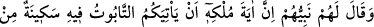
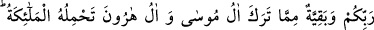
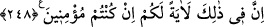

İnsanın, hem salâha, hem de fesâda mütemâyil kâbiliyet ve özellikleri vardır. Bazen
babalarda bulunan iyi ve güzel huylar, ıslaha yönelik istidâdlar, çocuklarda tezâhür
etmektedir. Bazen de bunun aksi olmaktadır. Yâni babalardaki kötü huylar, çocuklarda
gözükmemektedir.
Yaratma işi böylece bazı huyları ortaya çıkarıp bazılarını da gizleyerek deverân eder.
Örnek olarak Âdem (a.s.) ile iki oğlu Kabil ve Habil’e bak. Sonra günümüze kadar süre
gelen zaman içindeki, ana-baba ve çocuklarına bak! Hasılı Tâlût, İsrâîloğulları yanında
en zayıf bir insan ise de, Allah katında büyük ve şereflidir. Zîrâ nazar-ı ilâhî bir taşa
teveccüh ederse onu cevher, bir dikene taalluk ederse onu gül ve çiçek yapar.
O halde hiçbir kimse, hükmünde Allah’a îtirâzda bulunamaz. O’nun kazâ ve kaderini
geri çevirecek de yoktur. İnsanlar kendi aralarında yükseltseler de Allah’ın alçalttığı
kimse alçaktır. İnsanlar hakir görseler de Allah’ın yücelttiği kimse yücedir. Akıllı kimse
bu gibi misâlleri düşününce vicdânında insâf ve sükût belirir. İşi, ölmeyen Allah’a
bırakır. Çünkü “Allah, hakkı söyler ve doğru yolu gösteren de O’dur.” (el-Ahzâb,
33/4).
248. Peygamberleri onlara: Onun hükümdarlığının alâmeti, Tâbût’un size
gelmesidir. Meleklerin taşıdığı o Tâbût’un içinde Rabbinizden size bir ferahlık ve
sükûnet, Mûsâ ve Hârûn hanedanlarının bıraktıklarından bir kalıntı vardır. Eğer
inanmış kimseler iseniz sizin için bunda şüphesiz bir alâmet vardır, dedi.
“Tâbût” dönme mânâsına gelen “tevb” kelimesinden türetilmişdir. Bazı şeylerin,
içine konulup alınmasına müsâid bir zarf oluşu sebebiyle “tâbût” denilmiştir. Ondan
çıkan şey yine ona döner ve sâhibi ihtiyaç duyduğu şeyleri almak için ona mürâcaat
eder.
Âyetteki “tâbût”tan maksat, Tevrât’ın içinde bulunduğu sandıktır. Mûsâ (a.s.)’ın
vefatından sonra Allah Teâlâ, azgınlık ve isyanları sebebiyle İsrâîloğulları’na
kızdığından bu sandığı ref’etmiş, ortadan kaldırmıştır.
İsrâîloğulları peygamberlerinden, Tâlût’un hükümdarlığına dâir bir delil, alâmet
istediklerinde peygamberleri dedi ki: “Onun hükümdarlığının alâmeti, size meleklerin
muhâfazasında gökten bir tâbûtun gelmesidir.” Nihayet insanların gözü önünde gökten
anlatılan şekilde bir tâbût inip Tâlût’un yanında yer aldı. Bu îzâh İbn Abbas’dan rivayet
edilmiştir.
Şöyle bir rivâyet vardır: Cenâb-ı Allah Hz. Âdem’e bir tâbût indirdi ki; onda